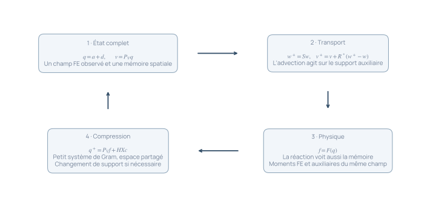
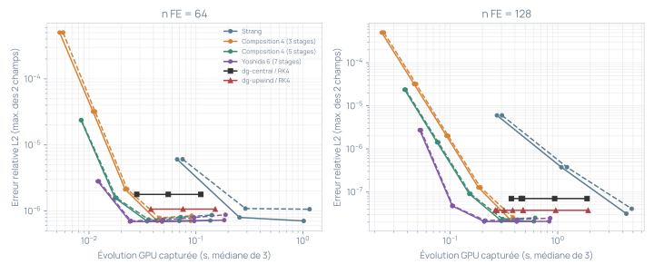
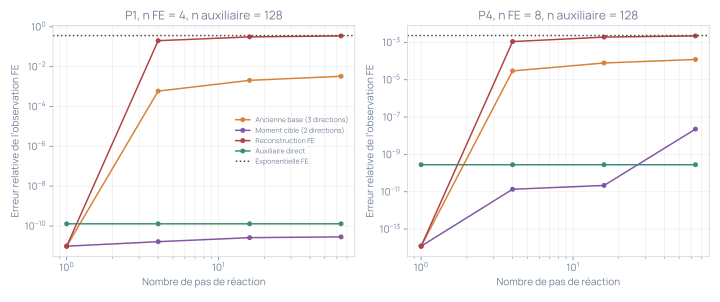
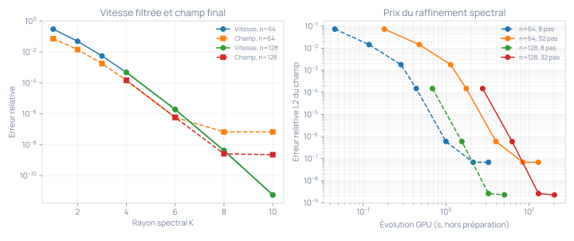

17/11/2026, 07:45 CET
Le travail a produit un couplage FE avec mémoire, des preuves conditionnelles d’énergie et d’erreur, et des prototypes CUDA vérifiés. Le choix du moment cible améliore fortement la compression d’une physique sous-résolue. L’extension du transport utilise une vitesse obtenue d’une fonction de courant FE par des cartes conservatives et des compositions temporelles d’ordre supérieur. Une avancée algorithmique publiable reste à démontrer face aux méthodes les plus proches; aucun résultat ne permet encore de qualifier l’ensemble de révolutionnaire.

Le résultat théorique central : tout transfert qui préserve l’observation FE et réduit l’énergie réduit aussi la distance à chaque référence FE. Cela reste vrai si l’espace de compression dépend de la solution. La borne globale dépend des défauts locaux de transport et de physique; elle n’ajoute pas un terme indépendant proportionnel au nombre de changements de support.
Tous les calculs numériques, références, projections et contrôles matriciels utilisent la RTX 5090 en double précision. Les figures et la rédaction sont produites sur le CPU. Les sources restent des prototypes dans experiments/slfe, sur la branche SLFE du fork keckj/rodin.
Rapport détaillé illustré · PDF complet · Manuscrit avec preuves
Deux champs lisses sont transportés jusqu’à T = 0,5 par une vitesse à neuf directions de Fourier, issue de moments FE. Le comparateur DG/RK4 utilise le même espace P4 et la même vitesse. Les deux familles mettent à jour le champ FE à chaque pas et utilisent des graphes CUDA.

| Méthode | Pas | Erreur relative | Médiane (s) |
|---|---|---|---|
| DG central | 310 | 7.029e-08 | 0.2896 |
| DG upwind | 303 | 3.748e-08 | 0.262 |
| Mémoire / Y6 | 4 | 4.729e-08 | 0.1046 |
| Mémoire / Y6 | 8 | 2.058e-08 | 0.2086 |
| Reset / Y6 | 4 | 4.743e-08 | 0.1069 |
| Reset / Y6 | 8 | 2.167e-08 | 0.2124 |
À la tolérance relative 1e−7 et n FE = 128, la mémoire/Yoshida est 2.50 fois plus rapide que le meilleur DG testé qui respecte cette tolérance. Les médianes proviennent de cinq blocs à ordre alterné; les étendues sont dans le rapport complet. Ce facteur concerne uniquement l’évolution après préparation, sur ce problème.
Les compositions sont classiques; leur ordre continu ne constitue pas une nouveauté. La reconstruction FE peut être presque aussi efficace : le gain de transport ne démontre donc pas, à lui seul, l’utilité de la mémoire. Les assemblages, la préparation et toute physique supplémentaire sont exclus de ces chronométrages.
Une correction algorithmique tardive améliore fortement le test de physique sous-résolue : l’espace de compression conserve maintenant le moment auxiliaire brut du champ cible, en plus de la mémoire entrante. Ce moment est déjà disponible. Deux directions remplacent ici les trois directions précédentes.

En arithmétique exacte, conserver le moment P_W f garantit que l’erreur de compression ne dépasse pas l’erreur de sa projection sur W. Les observations FE, la contraction et la mémoire entrante restent compatibles. Le seuil numérique de rang doit toutefois conserver les directions nécessaires; les tests exposent une limite de conditionnement près des dépendances linéaires.
| Méthode | Erreur observation | Évolution (s) |
|---|---|---|
| Ancienne base | 0.003294 | 0.2411 |
| Reconstruction FE | 0.3493 | 0.02175 |
| Auxiliaire direct | 1.286e-10 | 0.01863 |
| Moment cible retenu | 2.831e-11 | 0.2232 |
Cas du tableau : réaction seule, P1 sur le maillage grossier n = 4, support auxiliaire Q4 de résolution 128, 64 pas. Les temps sont des mesures uniques hors préparation. Le solveur auxiliaire direct reste beaucoup moins cher : ce test prouve l’intérêt du choix de direction pour la compression, sans établir un avantage global de coût.
Sur les advections-réactions résolues, la reconstruction FE reste un concurrent sérieux. La réaction cubique précédente donne une meilleure précision avec mémoire, mais à un coût nettement supérieur. Les résultats défavorables et les contrôles indépendants restent dans le rapport complet.
Le second test utilise une fonction de courant à spectre infini. Les caractéristiques de référence suivent sa vitesse analytique non tronquée; le rayon spectral des moments FE est raffiné séparément. Cela vérifie la chaîne FE → vitesse filtrée → transport au-delà du cas à neuf modes.

Avec 220 vecteurs d’onde retenus, huit pas et n FE = 128, l’erreur relative est 2.26e-09, pour un plancher FE de 2.2e-09. La vitesse filtrée diffère de la vitesse analytique de 5.66e-12 en norme relative échantillonnée. Le prix des nombreux cisaillements reste une limite importante.
La piste défendable pour un article est la compatibilité entre mémoire physique, observation FE, compression dépendant de l’état et physique dissipative. Les briques de projection, de sous-échelles, de cisaillement et de composition ont des antécédents : les preuves seules n’établissent pas la nouveauté bibliographique.
La sélection numérique de rang doit d’abord protéger le moment cible : un diagnostic a identifié sa perte au deuxième pas du cas P4 presque dépendant. Les prochaines expériences décisives doivent établir un bénéfice à précision et coût comparables dans un problème couplé où la mémoire est nécessaire, contrôler les défauts pour des vitesses FE générales, puis comparer avec les remaps et méthodes de sous-échelles GPU les plus proches. Le prototype périodique 2D ne couvre encore ni frontières physiques, ni MPI, ni intégration de production dans Rodin.
Limite établie : les sous-pas négatifs restent contractants mais amplifient la dissipation des projections à maillage fixé. Les ordres quatre et six mesurés avant le plateau spatial ne doivent pas être annoncés comme un théorème d’ordre uniforme.